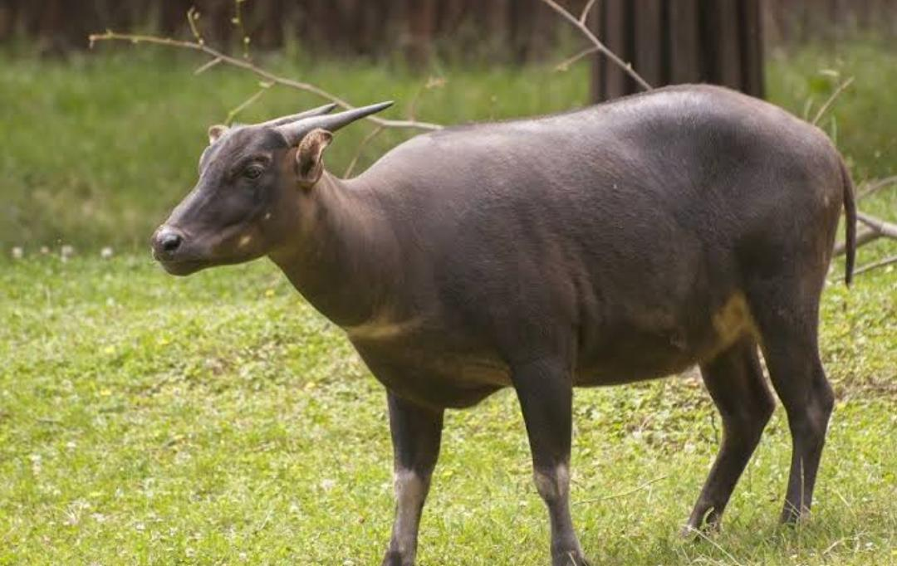
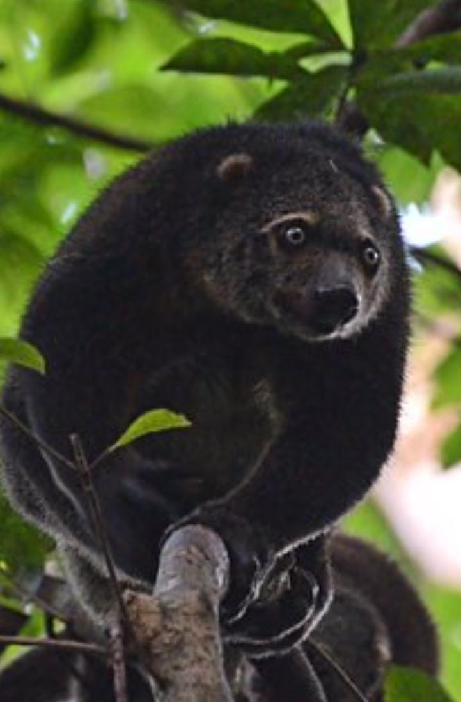

Pulau Sulawesi
Sulawesi, salah satu pulau besar di Indonesia, dikenal dengan fauna yang sangat unik dan endemik, yang sebagian besar tidak ditemukan di tempat lain di dunia. Pulau ini memiliki sejarah geologi yang unik, yang menyebabkan terbentuknya berbagai spesies satwa yang berevolusi secara terpisah dari fauna di bagian lain Indonesia dan Asia Tenggara. Namun, seiring dengan hilangnya habitat akibat deforestasi, ekspansi lahan pertanian, dan aktivitas manusia lainnya, banyak satwa endemik Sulawesi kini terancam punah.
Sulawesi merupakan salah satu kawasan dengan tingkat endemisitas fauna tertinggi di dunia, menjadikannya kawasan penting bagi upaya konservasi global. Satwa-satwa yang hidup di pulau ini sangat bergantung pada hutan hujan tropis dan ekosistem yang sehat. Namun, deforestasi yang cepat, pembukaan lahan untuk perkebunan, dan perburuan liar telah mengancam keberadaan banyak spesies unik di Sulawesi. Untuk itu, diperlukan upaya konservasi yang lebih intensif, termasuk perlindungan habitat, penegakan hukum terhadap perburuan liar, serta peningkatan kesadaran masyarakat akan pentingnya melestarikan fauna endemik ini.
Tanpa upaya yang serius, fauna unik di Sulawesi berisiko mengalami penurunan populasi yang drastis, bahkan punah di alam liar, sehingga penting untuk terus menjaga dan melestarikan keanekaragaman hayati pulau ini.
Berikut merupakan penjelasan singkat nama hewan dan habitatnya di pulau Sulawesi:
1. Anoa

Anoa adalah mamalia endemik Sulawesi dan pulau-pulau kecil di sekitarnya di Indonesia.
Ada dua spesies anoa yang dikenal, yaitu anoa dataran rendah (Bubalus depressicornis)
dan anoa pegunungan (Bubalus quarlesi). Keduanya sering disebut sebagai “kerbau kerdil”
karena mereka adalah kerabat dekat kerbau, tetapi berukuran jauh lebih kecil. Anoa adalah
satwa liar yang dilindungi dan termasuk hewan yang terancam punah.
Ciri-ciri Anoa:
- Ukuran tubuh kecil dibandingkan dengan kerbau, dengan tinggi sekitar 75-100 cm dan berat 150-300 kg.
- Tanduk pendek dan runcing pada kedua jenis kelamin, meskipun pada anoa pegunungan, tanduk lebih kecil dan sering melengkung ke belakang.
- Bulu berwarna gelap dan pendek, dengan kulit yang tebal untuk melindungi diri dari duri dan hutan yang lebat.
- Anoa memiliki tubuh yang kekar dan kaki yang kuat, cocok untuk bergerak di hutan pegunungan yang curam.
Anoa hidup di hutan hujan tropis dan hutan pegunungan di Sulawesi. Mereka adalah hewan soliter atau hidup dalam kelompok kecil,
lebih sering aktif di pagi hari dan sore hari. Makanan utama anoa adalah tumbuh-tumbuhan, termasuk rumput, daun, buah, dan
ranting. Anoa juga dikenal sebagai hewan yang pemalu dan sangat menghindari manusia.Anoa dikategorikan sebagai terancam punah
(Endangered) oleh IUCN, terutama karena hilangnya habitat akibat deforestasi, serta perburuan liar untuk diambil daging dan tanduknya.
Penurunan populasi anoa di alam liar juga disebabkan oleh aktivitas manusia yang terus berkembang di habitat alami mereka.
2. Kuskus Beruang

Kuskus Beruang (Ailurops ursinus) adalah salah satu spesies marsupialia endemik yang hidup di Sulawesi
dan beberapa pulau kecil di sekitarnya. Kuskus ini mendapatkan namanya karena penampilannya yang menyerupai beruang
kecil, meskipun sebenarnya mereka termasuk dalam keluarga kuskus, yang lebih dekat dengan oposum daripada beruang.
Kuskus beruang adalah salah satu dari beberapa spesies kuskus yang ditemukan di wilayah Indonesia, dan mereka
merupakan satwa arboreal yang hidup di kanopi hutan tropis.
Ciri-ciri Kuskus Beruang:
- Ukuran tubuh sedang, dengan panjang tubuh sekitar 50-60 cm, dan ekor yang hampir sama panjangnya. Beratnya berkisar antara 5-10 kg.
- Bulu tebal dan lebat, berwarna coklat atau abu-abu gelap yang berfungsi untuk menyamarkan diri di lingkungan hutan.
- Wajah yang bulat, dengan mata besar dan hidung kecil, memberikan penampilan yang menggemaskan.
- Ekor prehensil (dapat menggenggam), yang digunakan untuk membantu bergerak dan bergelantungan di dahan-dahan pohon.
- Seperti marsupial lainnya, kuskus beruang memiliki kantung (marsupium) di perut betina, tempat mereka merawat anak-anak mereka setelah lahir.
Kuskus beruang hidup di hutan hujan tropis dan biasanya ditemukan di bagian atas pohon, tempat mereka mencari makanan seperti daun, buah-buahan, dan bunga.
Mereka termasuk hewan yang lebih lambat bergerak, sering kali memanjat dengan hati-hati di antara dahan pohon. Kuskus beruang biasanya bersifat soliter,
kecuali saat betina bersama anaknya. Mereka juga lebih aktif di malam hari (nokturnal), meskipun kadang-kadang bisa terlihat aktif di siang hari.
Kuskus beruang diklasifikasikan sebagai rentan (Vulnerable) oleh IUCN, terutama karena hilangnya habitat akibat deforestasi, serta perburuan liar.
Mereka sering diburu untuk diambil dagingnya atau dijual sebagai hewan peliharaan ilegal, meskipun dalam banyak wilayah mereka dilindungi oleh undang-undang.
Kuskus beruang adalah bagian dari keanekaragaman hayati unik di Indonesia, dan pelestarian mereka sangat penting untuk menjaga keseimbangan ekosistem hutan di Sulawesi.
3. Monyet Hitam

Monyet Hitam Sulawesi atau lebih dikenal sebagai Yaki (Macaca nigra) adalah primata endemik dari Pulau Sulawesi
dan beberapa pulau kecil di sekitarnya, seperti Pulau Bacan. Monyet ini memiliki ciri khas berupa bulu hitam pekat di seluruh
tubuhnya dan sering disebut sebagai monyet jambul karena memiliki jambul rambut yang mencolok di bagian atas kepalanya.
Yaki merupakan salah satu primata yang paling terkenal di Sulawesi, tetapi sayangnya populasinya terus menurun dan kini terancam punah.
Ciri-ciri Monyet Hitam Sulawesi:
- Bulu hitam legam yang menutupi seluruh tubuh.
- Jambul rambut yang berdiri tegak di kepala, membuat penampilan mereka sangat khas
- Wajah tanpa rambut, berwarna hitam, dengan ekspresi yang sering tampak “serius” atau murung.
- Beratnya berkisar antara 5-10 kg, dengan jantan yang lebih besar daripada betina.
- Tidak seperti banyak spesies monyet lainnya, ekornya sangat pendek, hanya sekitar 2 cm.
Monyet hitam Sulawesi hidup di hutan hujan tropis dan mangrove. Mereka adalah hewan sosial yang
hidup dalam kelompok besar yang bisa terdiri dari 20-100 individu. Yaki memiliki perilaku yang
sangat terorganisir dalam kelompok, dengan hierarki sosial yang kompleks. Mereka adalah pemakan
segala (omnivora), tetapi makanan utama mereka terdiri dari buah-buahan, daun, serangga, dan
kadang-kadang kecil vertebrata.
Monyet hitam Sulawesi dikategorikan sebagai terancam punah (Critically Endangered) oleh IUCN.
Ancaman utama bagi yaki adalah hilangnya habitat akibat deforestasi dan perluasan lahan pertanian,
serta perburuan untuk dijadikan makanan atau diperdagangkan secara ilegal sebagai hewan peliharaan.
Di beberapa daerah, monyet ini masih diburu untuk dagingnya, yang dianggap sebagai makanan eksotis.
Monyet hitam Sulawesi memainkan peran penting dalam ekosistem hutan Sulawesi, terutama dalam penyebaran
biji-bijian yang membantu regenerasi hutan.